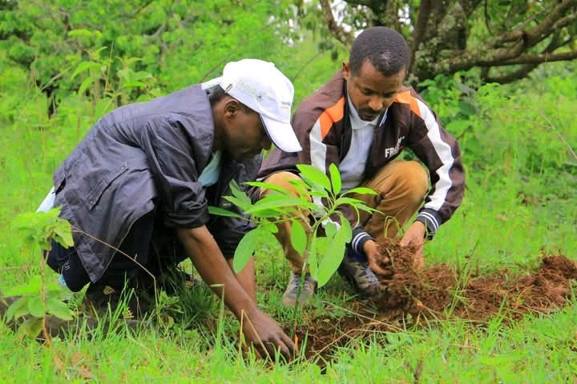
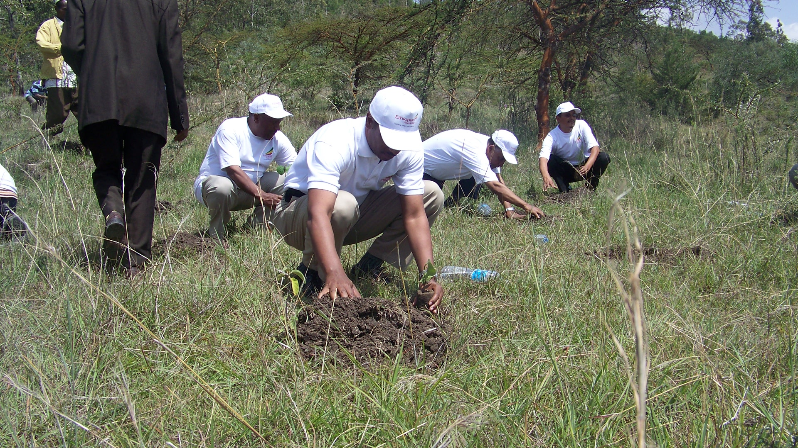
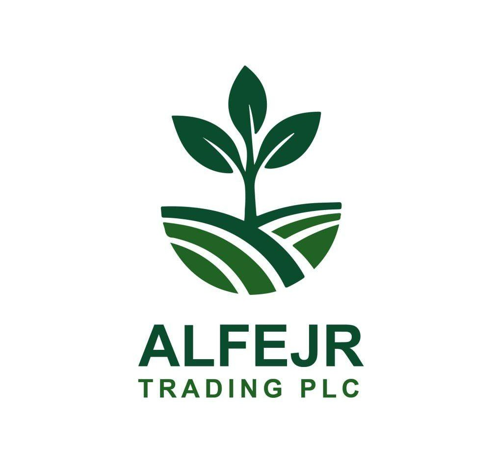
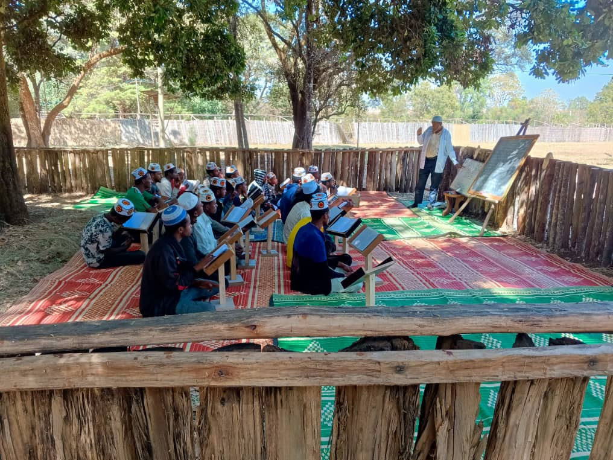

Forest Restoration
Restoring degraded landscapes through large-scale native tree planting, watershed management, and long-term ecosystem recovery — rebuilding the biological wealth that communities depend on.
Learn moreRestoring Ethiopia's natural landscapes while empowering communities to build resilient, sustainable futures.

At MIDIR FUTURES, we believe the health of the land and the wellbeing of its people are inseparable. Our work bridges environmental restoration with community development — because lasting ecological change is only possible when local people are partners, not bystanders.
From reforestation in degraded highlands to climate-smart agriculture and rural livelihood programmes, every initiative we lead is shaped by deep local knowledge, long-term commitment, and genuine respect for the communities we work with.
Learn About UsOur work spans the full arc from ecological recovery to sustainable livelihoods — because a resilient future requires both.

Restoring degraded landscapes through large-scale native tree planting, watershed management, and long-term ecosystem recovery — rebuilding the biological wealth that communities depend on.
Learn more
Helping communities adapt to a changing climate through sustainable land management, drought-resistant farming, water conservation, and locally appropriate resilience strategies.
Learn more
Training farmers in climate-smart agricultural practices, agroforestry, soil health, and cooperative development — strengthening food security and sustainable incomes for rural households.
Learn more
Strengthening rural livelihoods through cooperative formation, capacity building, women's empowerment, rural innovation hubs, and inclusive community participation in all programmes.
Learn morePromoting responsible stewardship of Ethiopia's natural resources through environmental education, community-based conservation, and policy engagement across local and national levels.
Learn moreOver more than two decades, our programmes have left a visible mark on Ethiopia's landscapes and communities.
From the cool Afromontane highlands to the vast river valleys below, Ethiopia's natural environments are among the most biodiverse and ecologically significant on the continent. Protecting and restoring them is not just an environmental obligation — it is a commitment to the millions of people whose livelihoods, food security, and cultural identity are bound to the land.
Environmental restoration does not happen in isolation. It takes farmers, teachers, local leaders, women's groups, and young people working together over years and decades. Our programmes are designed to build local capacity, transfer knowledge, and ensure that communities own the outcomes.
We work with Hadras, cooperatives, government extension workers, and grassroots organisations because lasting impact requires genuine partnership with the people who know and love these landscapes best.
More About Our ApproachWe welcome institutional partners, environmental NGOs, corporate supporters, researchers, and individuals who share our commitment to environmental restoration and community development in Ethiopia.
Development organisations and international NGOs seeking field partners for landscape restoration, sustainable agriculture, or rural livelihood programmes.
Businesses seeking verified environmental partnerships, carbon offset programmes, or supply chain sustainability initiatives in East Africa.
Conservation organisations and research institutions interested in co-developing evidence-based approaches to restoration and biodiversity recovery.
Technology providers, agronomists, hydrologists, and specialists who can contribute expertise to strengthen our programmes and expand their reach.
Individuals who want to contribute their expertise, time, or resources to long-term environmental and community development work in Ethiopia.
Have a different idea for collaboration? We are open to unconventional partnerships that genuinely serve the mission. Get in touch and let's talk.
Every tree planted, every farmer trained, every community supported builds a future that is more resilient, more equitable, and more alive. Join us.